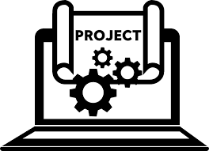

Projects & Coursework

Throughout my time at Northeastern University, I've worked on projects spanning data science, full-stack development, and biochemistry research. Each one has pushed me to apply classroom knowledge to real problems and grow as both a developer and a scientist.
Modeling the Drivers of Movie Popularity
Analyzed a TMDB dataset of ~5,000 movies to identify which factors best predict popularity, including budget, runtime, and genre. Built linear and regression models in Jupyter Notebook, finding that budget and ROI explained 60-64% of popularity variation.
ViTAL Hackathon — Digital Health Monitoring App
Served as Technical Lead and Backend Developer for a cross-platform React Native app that lets users scan nutrition labels and receive personalized dietary warnings. Built a Django backend with ~10,000 product records and implemented Tesseract image recognition all in under 12 hours.
Targeting BMP4 — Exploring Statins for Breast Cancer Metastasis
Designed and presented a scientific poster on the therapeutic implications of BMP4 in breast cancer metastasis. Analyzed ~50 preclinical experiments evaluating statins' effect on metastasis.
Anlitiks Inc. — Data Analyst Internship
Developed U.S. patient-count maps in R across 50+ counties to support feasibility analysis for RapidAnalyzer. Executed 25+ SQL queries in AWS Athena and investigated 5 AI tools for potential platform integration.
Relevant Courses
- Foundations of Data Science
- Probability and Statistics
- Organic Chemistry I & II
- Genetics and Molecular Biology
- Biology Project Lab
Technical Skills
- Python, R, SQL, Java, JavaScript, HTML, CSS
- ReactJS, Node.js, Pandas, NumPy, scikit-learn
- Git, GitHub, PostgreSQL, MySQL, AWS Athena
- Lab: Gel Electrophoresis, DNA Extraction, Bacterial Transformation